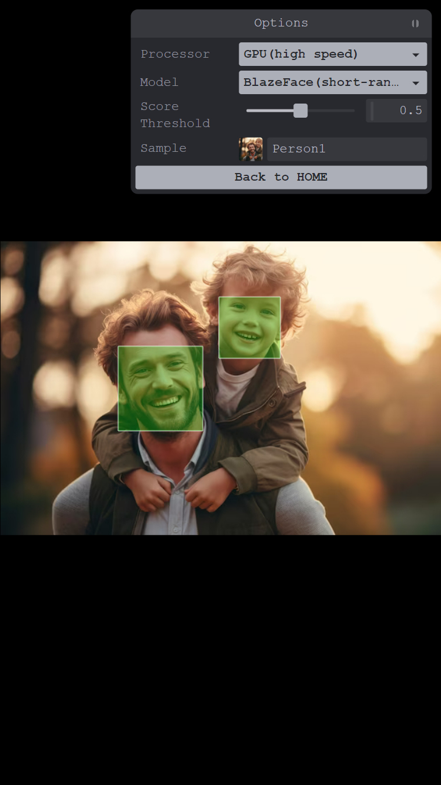
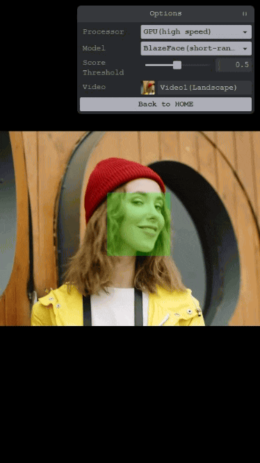

Face detection (image)
Detects faces from images using the BlazeFace model.

Face detection (video)
Detects faces from video using the BlazeFace model.
Detects faces from images using the BlazeFace model.
Detects faces from video using the BlazeFace model.